품질경영산업기사 (2018-03-04 기출문제)
1과목: 실험계획법
1. 다음은 기계간 부적합품의 차이가 있는지를 알아보고자 분산분석을 실시한 결과이다. 실험결과에 대한 설명으로 가장 거리가 먼 것은?
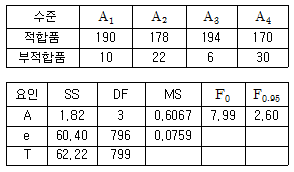
- 유의수준 5%로 분산분석 결과 기계간 부적합품률 차이는 의미가 있다.
- 부적합품률이 높은 설비에 대해 보수 또는 오퍼레이터 훈련 등의 조치가 필요해 보인다.
- 현실적으로 계수치 1 요인실험은 완전 랜덤화가 곤란하므로 실무상에서는 적용할 수 없다.
- 기각역 F0.95는 오차항의 자유도가 충분히 크므로 오차항의 자유도를 ∞로 놓고 구한 것이다.
(정답률: 57%)

2. 모수모형에서 요인 A를 5수준 택하고, 랜덤으로 4일을 택하여 난괴법으로 반복이 없는 실험을 하였다. 그 결과를 해석하기 위하여 일간 제곱합(SB)을 계산했더니 106.2, 오차의 제곱합(Se)을 계산했더니 95.8이었다.
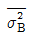
은 약 얼마인가- 5.48
- 6.85
- 7.21
- 9.14
(정답률: 50%)
3. 반복수가 일정한 1 요인실험에서 수준수가 4, 반복수가 3일 때, 변량요인 A의 분산(
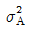
)의 추정식을 맞게 표현한 것은?- VA
- VA-Ve/3
- VA+Ve
- VA-Ve/4
(정답률: 68%)
4. 1 요인실험에 대한 설명으로 틀린 것은?
- 각 요인 수준에서 반복수가 동일해야 한다.
- 특정한 하나의 요인의 영향을 조사할 때 사용된다.
- 실험 단위의 배치는 완전임의배치법(Completely Randomized Design)에 따른다.
- 특성치에 영향을 주는 다양한 요인들 중 특정 요인의 영향에 대해 조사하고자 할 때 사용된다.
(정답률: 62%)
5. 다음 표와 같이 반복 없는 2요인실험을 한 결과, 1개의 결측치(ⓨ)가 발생하였다. 이 때 결측치의 추정값은 얼마인가? (단, A와 B는 모두 모수요인이다.)
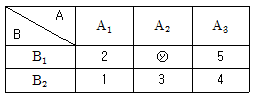
- 1
- 2
- 3
- 4
(정답률: 45%)
6. 다음 표는 승용차의 평균 주행거리(km/L)를 비교하려고 세 종류의 승용차를 같은 조건에서 실험한 데이터와 분산분석표이다. μ(A1)를 α＝0.01로 구간추정하고 싶을 때 구간 한계폭은 약 얼마인가? (단, t0.99(8)＝2.896, t0.995(8)＝3.355, t0.99(2)＝6.965, t0.995(2)＝9.935이다.)
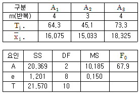
- ±0.561
- ±0.650
- ±1.349
- ±1.922
(정답률: 63%)
7. 표와 같은 단순회귀 1요인실험 분산분석표에서 나머지 제곱합(SR)의 값은 약 얼마인가?
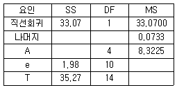
- 0.147
- 0.220
- 0.483
- 2.200
(정답률: 49%)
8. 반복이 없는 2 요인실험에서 요인A의 수준수는 3, T1∙＝2, T2∙＝12, T3∙＝8이고, 요인 B의 수준수는 4, T∙1＝12, T∙2＝3, T∙3＝3, T∙4＝4이었다. 이 때 제곱합 SA와 SB는 각각 약 얼마인가?
- SA＝9.33, SB＝16.83
- SA＝9.33, SB＝19.00
- SA＝12.67, SB＝16.83
- SA＝12.67, SB＝19.00
(정답률: 50%)
9. 2개의 요인 A, B가 특성치에 영향을 주는지 알아보기 위한 실험을 하고자 한다. 실제적으로 사용되는 2요인실험의 설계방법이 아닌 것은?
- A , B두 요인 모두 모수요인인 반복 없는 2요인 실험
- A , B두 요인 모두 변량요인인 반복 없는 2요인 실험
- A는 모수요인, B는 변량요인인 반복 없는 2요인 실험
- A는 변량요인, B는 모수요인인 반복 없는 2요인 실험
(정답률: 61%)
10. 1 요인 모수모형에서 수준 i의 모평균 μ1가 전체의 모평균 μ로부터 어느 정도의 치우침을 가지는 가를 나타내는 수치를 요인 A의 어떤 효과라 하는가?
- 주효과
- 오차의 효과
- 교호작용의 효과
- 산포의 효과
(정답률: 53%)
11. 다음 분산분석표에서 총 제곱합에 대한 오차 제곱합의 기여율은 약 얼마인가?
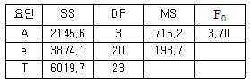
- 26%
- 36%
- 64%
- 74%
(정답률: 46%)
12. 수준수 ℓ＝4이고, 반복수 r＝5인 1 요인실험으로 분산분석한 결과, 요인 A가 1%로 유의적이었다. Ve＝0.788이고, ＝7.72일 때, μ(A1)을 유의수준 0.01로 구간추정하면 약 얼마인가? (단, t0.99(16)＝2.583, t0.995(16)＝2.921이다.)
- 6.424≤μ(A1)≤9.016
- 6.560≤μ(A1)≤8.880
- 6.574≤μ(A1)≤8.866
- 6.695≤μ(A1)≤8.745
(정답률: 54%)
13. 모수요인 A, B의 수준수가 각각 ℓ, m이고, 반복수가 r회인 2요인실험에서 요인 A의 불편분산의 기대치는?
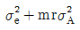
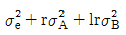
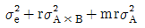
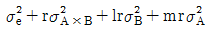
(정답률: 65%)
14. L8(27)형 직교배열을 나타내고 있다. 열 변호 3에 A요인을, 5에 B요인을 배치하였다면, 교호작용 A×B는 어느 열에 나타나는가?
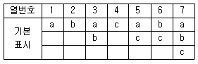
- 4열
- 5열
- 6열
- 7열
(정답률: 70%)
15. 어떤 모수모형의 1요인실험의 분산분석표가 다음과 같을 때, 설명으로 틀린 것은?
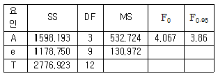
- 실험의 수준수는 4수준이다.
- 반복수가 일정한 실험계획법이 아니다.
- 유의수준 5%로 분산비가 유의하므로 최적수준이 존재한다.
- 반복수가 다르기 때문에 오차 제곱합의 기여율을 계산할 수 없다.
(정답률: 58%)
16. 2수준계 직교배열에 의한 실험 설계방법의 설명 중 틀린 것은?
- 총 실험횟수는 2m－1이다.
- 한 열은 하나의 자유도를 갖는다.
- 어느 열이나 0의 수와 1의 수가 반반씩 나타나있다.
- 두 열의 교호작용은 두 열의 성분기호의 곱의 열에 나타난다.
(정답률: 60%)
17. 라틴방격법에 대한 설명으로 틀리는 것은?
- 일반적으로 라틴방격법에서는 모수요인을 사용한다.
- 3요인실험보다 적은 실험횟수로 실험 가능하다.
- 적은 실험횟수로 주효과에 대한 정보를 간편히 얻을 수 있다.
- 2×2 라틴방격에서 가능한 배열방법의 수는 2가지이고, 3×3 라틴방격에서 가능한 배열 방법의 수는 3가지이다.
(정답률: 62%)
18. 라틴방격법에서 A, B, C 3요인이 모두 유의할 때, 조합조건 AiBjCk에서 모평균을 추정하기 위한 유효반복수(nc)는 얼마인가? (단, 수준수는 3이다.)
- 5/9
- 7/9
- 9/7
- 9/5
(정답률: 61%)
19. 반복이 있는 2요인실험(모수모형)의 요인 A, B, A×B 를 유의수준 5%로 F0에 의한 검정 결과가 맞는 것은? (단, F0.95(1, 36)＝4.00, F0.95(2, 36)＝3.15, F0.95(3, 36)＝2.76, F0.95(6, 36)＝2.25이다.)
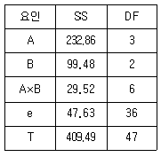
- A요인만 유의하다.
- A요인만 유의하다.
- A, A×B 요인만 유의하다.
- A, BA×B 모두 유의하다.
(정답률: 65%)
20. 반복이 있는 2요인실험의 구조모형이 다음과 같을 때, A 수준의 모평균
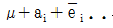
의 추정치는? (단 A, B는 모수요인이며, i=1, 2, ⋯, ℓ, j=1, 2, ⋯, m이고, k-1, 2, ⋯, r이다.)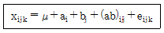
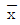
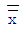
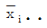
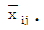
(정답률: 59%)
2과목: 통계적품질관리
21. 정규분포 N(μ, σ2)가 있다. 이때 Y=aX+b라 할 때, Y의 기대치 및 분산으로 맞는 것은? (단, a, b는 상수, X는 확률변수이다.)
- E(Y)=aμ, V(Y)=a2σ2
- E(Y)=aμ, V(Y)=a2σ2+b
- E(Y)=aμ+b, V(Y)=a2σ2
- E(Y)=aμ+b, V(Y)=a2σ2+b
(정답률: 64%)
22. 제품의 생산량을 측정하였더니 다음과 같았다. 모집단 생산량의 모표준편차를 신뢰수준 95%로 신뢰구간을 추정하면 약 얼마인가?
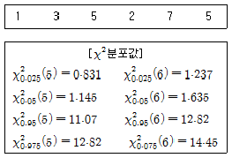
- 1.31~4.48
- 1.39~5.47
- 1.72~20.08
- 1.94~29.88
(정답률: 34%)
23. 상관계수에 대한 설명 중 틀린 것은?
- 상관계수의 제곱의 값(r2)을 기여율이라 한다.
- 상관계수 r은 －1부터 ＋1까지의 값을 취한다.
- 상관계수의 값이 1 또는 －1에 가까울수록 일정한 경향선으로부터의 산포는 커진다.
- 2개의 변량 x 와 y가 있을 경우, x와 y의 선형관계를 표시하는 척도를 상관계수라 한다.
(정답률: 62%)
24. c관리도에서 Σc＝41, k＝10일 때, Lcx의 값은?
- 4.10
- 6.07
- 10.20
- 고려하지 않는다.
(정답률: 72%)
25.  관리도에서
관리도에서  관리도의 관리한계선을 계산할 때 활용하는 A2의 계산식으로 맞는것은?
관리도의 관리한계선을 계산할 때 활용하는 A2의 계산식으로 맞는것은?
- 3/d2
- 3/√n
- 3/C2√n
- 3/d2√n
(정답률: 68%)
26.
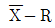
관리도에서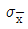
＝16.2, σb＝8.4, σw＝24일 때, 샘플의 크기는 약 얼마인가?- 3
- 5
- 7
- 9
(정답률: 49%)
27. 다음은 제1종 과오(α)와 제2종 과오(β)에 대한 설명이다. 내용 중 맞는 것은?
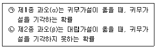
- ㉠만 옳다.
- ㉡만 옳다.
- ㉠, ㉡ 모두 옳다.
- ㉠, ㉡ 모두 틀리다.
(정답률: 59%)
28. 어떤 제품의 모집단이 N(30, 42)의 분포를 따른다. X가 34이상일 확률을 구하면?
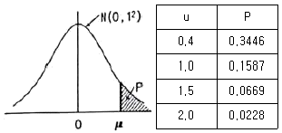
- 0.0113
- 0.0228
- 0.1587
- 0.3446
(정답률: 62%)
29. 계수형 샘플링검사 절차－제1부：로트별 합격품질한계(AQL) 지표형 샘플링검사 방식(KS Q ISO 2859－1：2014)에 따른 엄격도 전환방식에 관한 설명으로 틀린 것은?
- 까다로운 검사에서 연속 5로트가 합격되면, 보통검사로 전환된다.
- 까다로운 검사에서 불합격 로트의 누계가 5이면, 검사가 중지된다.
- 수월한 검사에서 1로트가 불합격되면, 다음 로트는 까다로운 검사로 전환된다.
- 보통검사에서 연속 5로트 이내에 2로트가 불합격되면, 까다로운 검사로 전환된다.
(정답률: 72%)
30. 관리도 작성을 위하여 가장 이상적인 부분군(部分群)은?
- 장시간 공평하게 추출한 것
- 우연원인만이 작용하고 있는 것
- 생산조건의 변화를 탐지할 수 있는 것
- 층별 추출법(stratified sampling)에 의한 것
(정답률: 54%)
31. 어떤 측정방법으로 동일 시료를 무한횟수 측정하였을 때, 그 측정값의 평균치와 참값과의 차를 무엇이라 하는가?
- 오차(error)
- 정밀도(precision)
- 신뢰성(reliability)
- 정확도(accuracy)
(정답률: 47%)
32. 계량형 관리도에 관한 설명으로 틀린 것은?
- 일반적으로 계량형 품질특성치는 정규분포를 따른다고 가정한다.
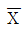
관리도에서 시료의 크기를 크게 하면, 관리한계의 폭이 넓어진다. 관리도를 이용하여 공정평균 μ와 표준편차 σ를 추정할 수 있다.
관리도를 이용하여 공정평균 μ와 표준편차 σ를 추정할 수 있다.- 품질특성치가 계량형인 경우 일반적으로 공정의 평균과 표준편차를 함께 관리한다.
(정답률: 62%)
33. 모집단의 부적합품률이 1/3이고, 이 모집단으로부터 5개의 시료를 뽑을 때, 부적합품이 2개가 나타날 확률은 약 얼마인가?
- 0.296
- 0.329
- 0.494
- 0.512
(정답률: 44%)
34. A, B 두 사람의 작업자가 기계부품의 길이를 측정한 결과 다음과 같은 데이터가 얻어졌다. A 작업자가 측정한 것이 B 작업자가 측정한 것보다 크다고 할 수 있다면, A, B 두 사람 작업자의 측정치 차에 대한 95% 신뢰한계를 추정하면 약 얼마인가? (t0.95(5)＝2.015, t0.975(5)＝2.571, t0.95(6)＝1.943, t0.975(6)＝2.447이다.)
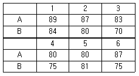
- 1.58
- 2.59
- 3.16
- 4.18
(정답률: 29%)
35. 상대적 산포의 정도를 표시하는 변동계수(CV)로도 분포의 집중성 형태를 개략적으로 알 수 있다. 평균값 근처에 가장 집중성이 큰 경우의 변동계수는?
- 0.⑤
- 0.10
- 0.15
- 0.20
(정답률: 63%)
36. 제조공정의 관리, 공정검사의 조정 및 체크를 목적으로 하는 검사는 무엇인가?
- 순회검사
- 공정감사
- 파괴검사
- 관리 샘플링 검사
(정답률: 50%)
37. 계수형 관리도에 관한 설명으로 틀린 것은?
- 계수형 관리도에는 np, p, c, u 관리도 등이 있다.
- LCL 이 음수인 경우 관리한계선은 고려하지 않는다.
- 측정하는 품질특성치가 부적합품수, 부적합수 등이다.
- np 관리도는 시료의 크기가 일정하지 않은 경우에도 사용할 수 있다.
(정답률: 67%)
38. 계수치에 대한 검·추정을 실시할 때 그들 자세의 속성(attribute)은 어떤 분포에 근사하고 있는가?
- 정규분포
- 와이블분포
- 이항분포
- 무아송분포
(정답률: 51%)
39. OC 곡선에서 합격품질수준(AQL)으로 생산된 제품이 불합격될 확률은?
- α
- β
- 1-α
- 1-β
(정답률: 53%)
40. 계수 및 계량 규준형 1화 샘플링 검사(KS Q 0001：2013) 중 계량 규준형 1회 샘플링 검사에서 표준편차 기지일 경우, 샘플크기는 40개, 합격판정계수는 2이었다. 만약 표준편차 미지일 경우에서 표준편차 기지인 경우와 동일하게 샘플링 검사를 보증하려면 샘플크기는 몇 개로 해야 하는가?
- 60
- 80
- 120
- 150
(정답률: 41%)
3과목: 생산시스템
41. 다음 중 독립수요 품목에 해당하는 것은?
- 부품
- 완제품
- 원료
- 반제품
(정답률: 56%)
42. JIT 시스템에서 생산준비시간의 축소와 로트 사이즈의 결정에 관한 설명으로 틀린 것은?
- 소로트화를 추진하여 생산준비횟수를 감소시킨다.
- 재고감축을 위해 로트수를 가능한 적게하여 생산을 평준화시켜야 한다.
- 소로트화, 생산준비시간의 축소는 수요변화에 신속하고 유연하게 대응할 수 있다.
- 생산준비시간의 축소를 위해 싱글셋업(single setup) 또는 원터치셋업(one-touch setup) 추구하고 있다.
(정답률: 44%)
43. 동대적인 순위결합의 규칙으로 사용되는 긴급률(CR)법에서 긴급률이 1보다 작을 경우의 의미로 맞는 것은?
- 여유가 있다.
- 진도가 예정보다 앞서 있다.
- 진도가 계획대로 되고 있다.
- 진도가 예정보다 지연되어 있다.
(정답률: 61%)
44. TPM 운동의 기본을 이루는 활동인 5S 활동에 대한 설명으로 맞는 것은?
- 청결은 정리, 정돈, 청소의 상태를 유지, 관리하는 것이다.
- 정리는 정해진 일을 올바르게 지키는 습관을 유지하는 것이다.
- 청소는 필요한 것과 필요 없는 것을 구별하여 필요 없는 것은 없애는 것이다.
- 정리란 필요한 것을 언제든지 필요할 때 사용할 수 있는 상태로 해 두는 것이다.
(정답률: 54%)
45. 다음 중 기본적인 생산 요소가 아닌 것은?
- 작업자(Man)
- 설비(Machine)
- 재료(Material)
- 정비(Maintenance)
(정답률: 64%)
46. 1일 실제가동시간은 8시간이며, 1개월간 실제가동일수는 25일인 동종의 기계가 4대이다. 실제 1개월간 작업할 부하량이 720시간이라면 여력은 약 몇 %인가?
- 5%
- 10%
- 15%
- 20%
(정답률: 58%)
47. 회사 A의 2017년 연초재고액은 0.8억원, 연말재고액은 1.2억원이고 매출원가는 5억원이다. 이때 재고회전율은 얼마인가?
- 0.2회/년
- 1회/년
- 5회/년
- 10회/년
(정답률: 57%)
48. 제품을 출시할 때 가장 적합한 예측 방법은?
- 시장조사법(Market Surveys)
- 계절분석법(Seasonal Analysis)
- 회귀분석법(Regression Analysis)
- 지수평활법(Exponential Smoothing)
(정답률: 64%)
49. PTS(Predetermined Time Standard)법의 가정으로 틀린 것은?
- 사람이 통제하는 작업은 한정된 수의 기본동작으로 구성되어 있다.
- 각 기본동작의 소요시간은 몇 가지 시간변동요인에 의해 결정된다.
- 작업 소요시간은 그 동작을 구성하고 있는 각 기본동작의 기준 시간치의 합계와 같다.
- 변동요인이 같다 하더라도 누가, 언제, 어디서인지에 따라서 그 소요시간은 정해진 기준 시간치와 다르다.
(정답률: 54%)
50. 재고통제방식에 대한 설명으로 틀린 것은?
- 품목별 재고통제방식은 ABC 분석 결과를 참고로 하여 결정된다.
- 정기발주방식에서 발주주기는 EOQ와 연간 수요량으로부터 산출된다.
- 정량발주방식에 의해 재고를 통제하기 위해서는 재고수준을 주기적으로 검토해야 한다.
- 정기발주방식은 상대적으로 높은 재고유지비용을 수반하는 결점을 가지고 있다.
(정답률: 41%)
51. 공정분석표에 사용되는 기호 중 가공(Operation)에 대한 정의로 맞는 것은?
- 작업대상물의 위치가 변경될 때
- 작업대상물이 분해되거나 조립될 때
- 일반적 보관 또는 기획적 저장을 할 때
- 작업 대상물을 확인하거나 수량을 조사할 때
(정답률: 76%)
52. 설비의 상태를 기준으로 보전 시기를 결정하는 방법으로 설비진단 기술을 적용하는 예지보전과 동의어인 보전방식은?
- CM(Corrective Maintenance)
- BM(Breakdown Maintenance)
- TBM(Time Based Maintenance)
- CBM(Condition Based Maintenance)
(정답률: 53%)
53. 다음 표는 생산시스템에 있어서 단독생산시스템과 연속생산시스템을 비교·분석한 내용이다. 맞는 것은?
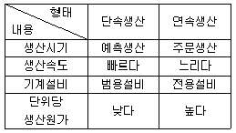
- 생산시기
- 생산속도
- 기계설비
- 단위당 생산원가
(정답률: 65%)
54. 그림의 네트워크로 표시된 프로젝트에서 활동 B의 가장 빠른 착수시간(earliest start time)과 가장 낮은 착수시간(latest start time)은 얼마인가?
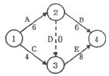
- (6, 6)
- (6, 8)
- (4, 8)
- (4, 10)
(정답률: 45%)
55. 프로젝트 일정관리(PERT/CPM)를 위한 계획공정표(Network) 표시상의 일반원칙이 아닌 것은?
- 우회곡선을 사용하지 말 것
- 활동을 가능한 한 많이 하지 말 것
- 무의미한 명목상 활동이 없도록 할 것
- 가능하면 활동상호간의 교차를 피할 것
(정답률: 56%)
56. H. F. Deckie에 의거 제창된 ABC 재고관리 기법에 관한 설명으로 가장 적합한 것은?
- A 품목은 품목비율이 10~20%인 반면에 금액적으로 70~80%를 차지한다.
- B 품목은 품목비율이 60~70%인 반면에 금액적으로 10~20%를 차지한다.
- C 품목은 품목비율이 10~20%인 반면에 금액적으로 60~70%를 차지한다.
- D 품목은 품목비율이 60~70%이고, 금액적으로도 70~80%를 차지한다.
(정답률: 74%)
57. 어느 작업장에서 부품의 수요율이 1분당 5개이고, 용기당 50개의 부품을 담을 수 있다. 이 때 필요한 간판의 수와 최대 재고수준은? (단, 용기의 순환시간은 100분이다.)
- 간판의 수：5개, 최대 재고수준：250개
- 간판의 수：5개, 최대 재고수준：500개
- 간판의 수：10개, 최대 재고수준：250개
- 간판의 수：10개, 최대 재고수준：500개
(정답률: 50%)
58. 여유시간 10분, 정미시간 50분인 경우 내경법으로 여유율을 구하면 약 몇 % 인가?
- 12.2%
- 16.7%
- 20.0%
- 25.1%
(정답률: 46%)
59. 작업측정 시 세부적인 작업으로 작업분할이 필요한 이유로 가장 거리가 먼 것은?
- 수행도평가(rating)를 하지 않기 위하여
- 작업방법의 세부를 명확히 하기 위하여
- 작업방법의 작은 변화라도 파악하여 개선하기 위하여
- 타 작업에도 공통되는 요소가 있으면 비교 또는 표준화하기 위하여
(정답률: 62%)
60. 5개의 작업장으로 이루어진 가공조립업체 A사의 1일 조업시간은 480분, 휴식시간은 오전, 오후 각각 20분씩이며, 1일 계획 생산량은 400개이고, 제품의 총작업소요 시간은 개당 4.5분이다. 이 조립라인의 밸런스효율(Efficiency：E)은 약 얼마인가?
- 70.2%
- 78.5%
- 81.8%
- 90.7%
(정답률: 49%)
4과목: 품질경영
61. 고객이 요구하는 참 풀질을 언어표현으로 체계화 한 것과 품질특성을 관련짓고, 고객의 요구를 대용특성으로 변화시키며 품질설계를 실행해 나가는 품질표를 사용하는 기법은?
- QFD
- 친화도
- FMEA/FTA
- 매트릭스 데이터 해석
(정답률: 67%)
62. TQC를 추진하는 조직의 원칙에 해당하지 않는 것은?
- 책임에는 항상 그에 상응하는 권한이 따라야 한다.
- 조직은 위에서 아래에 이르기까지 명확한 권한의 연결이 있어야 한다.
- 라인(line)직능과 스탭(staff)직능과의 분리를 도모하여 스탭(staff)에게 충분한 활동을 시켜야 한다.
- 조직 안에 있는 사람은 누구든지 한 사람의 라인(line)감독자와 그 외에 여러 사람에게 보고하여야 한다.
(정답률: 64%)
63. 히스토그램을 작성한 결과가 그림과 같을 때, 그림에 대한 설명으로 맞는 것은? (단, M은 규격의 중심이다.)
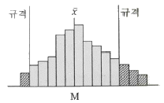
- 산포가 큰 경우
- 중심이 벗어난 경우
- 규격을 만족시키고 있는 경우
- 중심도 벗어나고 산포도 큰 경우
(정답률: 68%)
64. 분임토의에 적용될 수 있는 기법과 가장 관계가 먼 것은?
- 질문법
- 지시사항설명법
- 결점열거법
- 브레인스토밍법
(정답률: 65%)
65. 표준화의 원리 중 규격에 관한 설명으로 틀린 것은?
- 규격은 주기적으로 검토되어야 한다.
- 규격은 필요한 경우에는 개정할 수 있다.
- 규격은 기술적 사항에 대하여 정한 것이다.
- 규격은 일정기간이 경과되면 폐지하여야 한다.
(정답률: 72%)
66. QC 7가지 도구 중 제품의 특성에 영향을 주는 요인들을 도식화한 그림은 무엇인가?
- 산점도
- 히스토그램
- 체크시트
- 특성요인도
(정답률: 68%)
67. 측정시스템 변동에서 “R & R”이 의미하는 것은?
- 재현성 & 선형성
- 반복성 & 재현성
- 선형성 & 안정성
- 반복성 & 안정성
(정답률: 79%)
68. 크로스비의 품질경영에 대한 사상과 가장 관계가 깊은 것은?
- 다음 공정은 나의 고객이다.
- 시장경쟁 종합품질이 중요하다.
- 품질성과의 측정 척도는 품질비용이다.
- 품질전략 수립에는 벤치마킹이 중요하다.
(정답률: 63%)
69. 예방코스트：평가코스트：실패코스트의 비율을 구하면 얼마인가?
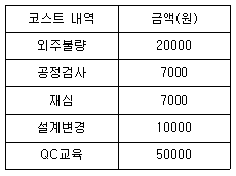
- 25：6：16
- 25：12：10
- 50：5：39
- 50：7：37
(정답률: 67%)
70. 한국산업표준(KS)의 제정대상이 아닌 것은?
- 신물질의 특허 기술
- 행위에 대한 동작, 절차
- 물질과 행위에 관한 용어
- 물질, 제품의 형상, 치수, 성능
(정답률: 77%)
71. 분임조에서 제안한 프로젝트가 채택되었다. 이 프로젝트를 수행하기 위해 일정계획을 수립하려고 할 때 어떤 기법을 사용하는 것이 가장 바람직한가?
- PDPC
- 특성요인도
- 애로우 다이어그램
- FMEA/FTA
(정답률: 44%)
72. 불법행위상의 엄격책임은 과실존재의 입증과 계약관계의 요건에 관계없이 배상청구를 가능하게 하는 것이다. 이 경우 피해자가 입증하여야 할 사항이 아닌 것은?
- 설계상의 결함
- 손해가 발생한 것
- 결함상품에 위해의 원인이 있는 것
- 결함상품이 손해로 법적 관련성을 갖는 것
(정답률: 69%)
73. 6시그마 품질 프로그램에 대한 설명으로 가장 거리가 먼 내용은?
- 공정능력지수(Cp)는 2를 목표로 한다.
- 치우침이 없는 이상적인 상황하에서 예견되는 부적합품률이 3.4ppm이다.
- 규격의 상·하한이 품질의 중심으로부터 6 의 거리에 있도록 하려는 노력이다.
- 설계, 제조, 관리부문 등 모든 조직이 참여하는 총체적인 품질향상 프로그램이다.
(정답률: 56%)
74. 제조공정에 관한 사내표준의 요건으로 틀린 것은?
- 직관적으로 보기 쉬운 표현을 하여야 한다.
- 공정변화에 대해 기여비율이 작은 것부터 한다.
- 현장에서 실행 가능한 내용을 수록하여야 한다.
- 사내표준화로 기록 된 내용은 구체적으로 객관적이어야 한다.
(정답률: 81%)
75. 품질보증 방법의 발전 순서를 바르게 나열한 것은?
- 신제품개발 중심 → 검사 중심 → 공정관리 중심
- 검사 중심 → 공정관리 중심 → 신제품개발 중심
- 검사 중심 → 신제품개발 중심 → 공정관리 중심
- 공정관리 중심 → 신제품개발 중심 → 검사 중심
(정답률: 70%)
76. 그래프를 그릴 때의 일반적인 주의사항으로 틀린 것은?
- 표제는 필요에 따라 생략한다.
- 데이터의 이력이나 해설은 그래프의 공백부분에 기록한다.
- 분류항목이 많을 때 수량이 적은 것은 모아서 “기타”로 일괄하여 나타낸다.
- 일반적으로 시간에 따라 변하는 수량의 상황을 나타낼 때는 꺾은선그래프가 유용하다.
(정답률: 75%)
77. 파라슈라만 등이 SERVQUAL 모형을 통해 제시한 서비스의 품질특성이 아닌 것은?
- 신뢰성(reliability)
- 확신성(assurance)
- 무형성(intangibles)
- 반응성(responsiveness)
(정답률: 74%)
78. 합리적인 군 구분이 되지 않아, X-Rm관리도를 작성하여 다음과 같은 자료를 얻었다. 공정능력지수를 구하면 약 얼마인가? (단, n＝2, d2＝1.128이다.)
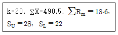
- 0.95
- 1.15
- 1.21
- 1.39
(정답률: 44%)
79. 6시그마 프로젝트 추진을 위한 DMAIC단계 중 부적합 원인을 규명하고, 잠재원인에 대한 자료를 확보하는 단계는 무엇인가?
- 정의(Define)
- 개선(Improve)
- 측정(Measure)
- 분석(Analyze)
(정답률: 73%)
80. 공정의 자연공차가 규격의 최대치와 최소치의 차보다 클 때, 조치사항으로 틀린 것은?
- 고객사와 상의하여 규격의 범위를 넓히도록 한다.
- 공정의 산포를 줄이기 위하여 공정의 조건을 바꾼다.
- 문제가 해결될 때까지 납품되는 제품을 철저하게 샘플링 검사를 한다.
- 새로운 기계의 구입, 공구 설계, 가공 방법 변경 등 기본적인 공정의 개선을 꾀한다.
(정답률: 49%)